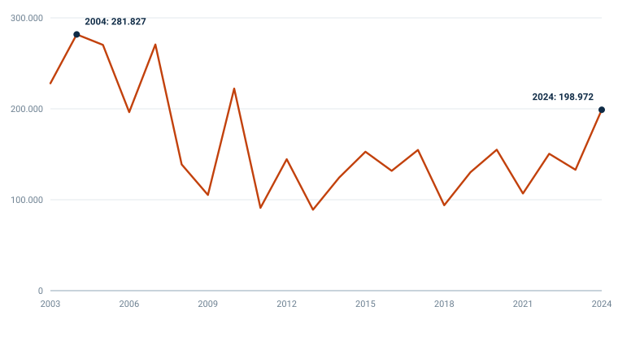
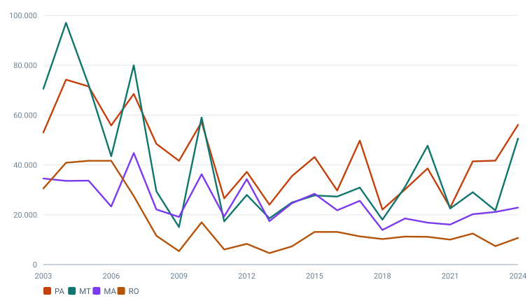

Versão estática dos gráficos do INCT-CONEXAO. Cada figura traz a fonte, os dados em tabela e o CSV. Esta página funciona sem JavaScript. Voltar ao site.
Detecções anuais do satélite de referência do INPE, somadas nos nove estados da Amazônia Legal

Fonte: Focos de queimada por unidade federativa e ano — Instituto Nacional de Pesquisas Espaciais (INPE) (2003 a 2024). Origem · Dados públicos, uso livre com citação da fonte (INPE) · Baixar CSV · Baixar imagem
Contagem de focos detectados pelo satélite de referência do INPE, a série indicada pelo próprio instituto para comparação entre anos, por manter o mesmo sensor e o mesmo horário de passagem. Foco de calor não é o mesmo que área queimada nem que incêndio confirmado: é uma detecção de anomalia térmica, e um incêndio grande pode gerar vários focos.
| Ano | Focos |
|---|---|
| 2003 | 228046 |
| 2004 | 281827 |
| 2005 | 270253 |
| 2006 | 196318 |
| 2007 | 270683 |
| 2008 | 138835 |
| 2009 | 105290 |
| 2010 | 222274 |
| 2011 | 91056 |
| 2012 | 144557 |
| 2013 | 89019 |
| 2014 | 124337 |
| 2015 | 152745 |
| 2016 | 131747 |
| 2017 | 154734 |
| 2018 | 93953 |
| 2019 | 130249 |
| 2020 | 154968 |
| 2021 | 106851 |
| 2022 | 150559 |
| 2023 | 132983 |
| 2024 | 198972 |
Detecções anuais do satélite de referência do INPE, nos quatro estados da Amazônia Legal com maior acumulado na série

Fonte: Focos de queimada por unidade federativa e ano — Instituto Nacional de Pesquisas Espaciais (INPE) (2003 a 2024). Origem · Dados públicos, uso livre com citação da fonte (INPE) · Baixar CSV · Baixar imagem
Contagem de focos detectados pelo satélite de referência do INPE, a série indicada pelo próprio instituto para comparação entre anos, por manter o mesmo sensor e o mesmo horário de passagem. Foco de calor não é o mesmo que área queimada nem que incêndio confirmado: é uma detecção de anomalia térmica, e um incêndio grande pode gerar vários focos.
| Ano | PA | MT | MA | RO |
|---|---|---|---|---|
| 2003 | 53040 | 70560 | 34548 | 30557 |
| 2004 | 74214 | 97012 | 33585 | 40881 |
| 2005 | 71477 | 72104 | 33691 | 41649 |
| 2006 | 55840 | 43479 | 23302 | 41649 |
| 2007 | 68491 | 79968 | 44765 | 27500 |
| 2008 | 48449 | 29448 | 22122 | 11560 |
| 2009 | 41664 | 15059 | 19132 | 5401 |
| 2010 | 57196 | 59013 | 36277 | 16970 |
| 2011 | 26563 | 17371 | 19315 | 6080 |
| 2012 | 37221 | 27953 | 34299 | 8312 |
| 2013 | 24046 | 18554 | 17455 | 4613 |
| 2014 | 35526 | 24955 | 24675 | 7334 |
| 2015 | 43164 | 27741 | 28436 | 13113 |
| 2016 | 29724 | 27305 | 21789 | 13113 |
| 2017 | 49770 | 30911 | 25576 | 11313 |
| 2018 | 22080 | 18032 | 13892 | 10255 |
| 2019 | 30165 | 31169 | 18521 | 11230 |
| 2020 | 38603 | 47708 | 16817 | 11145 |
| 2021 | 22876 | 22520 | 16077 | 10030 |
| 2022 | 41421 | 29039 | 20224 | 12460 |
| 2023 | 41715 | 21723 | 21113 | 7417 |
| 2024 | 56070 | 50551 | 22879 | 10692 |
{kind=link}
{kind=link}